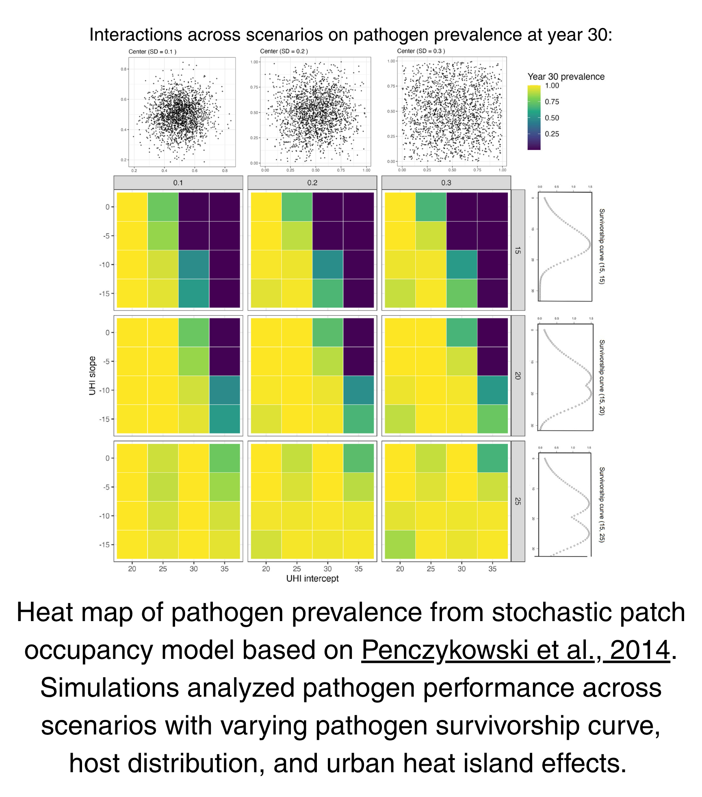
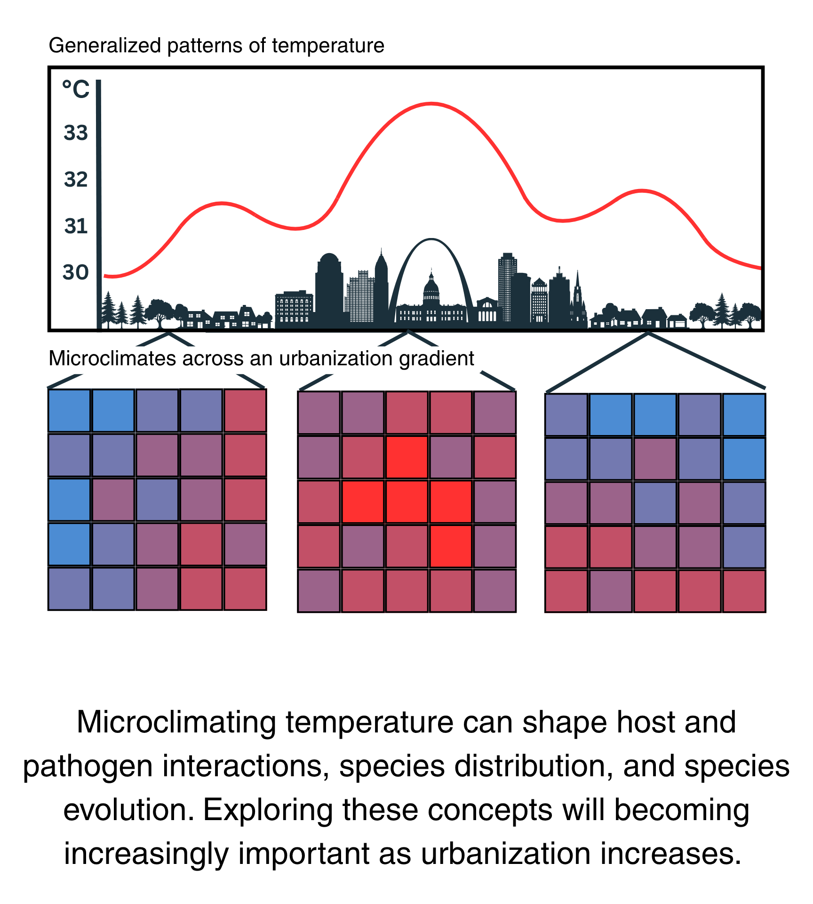
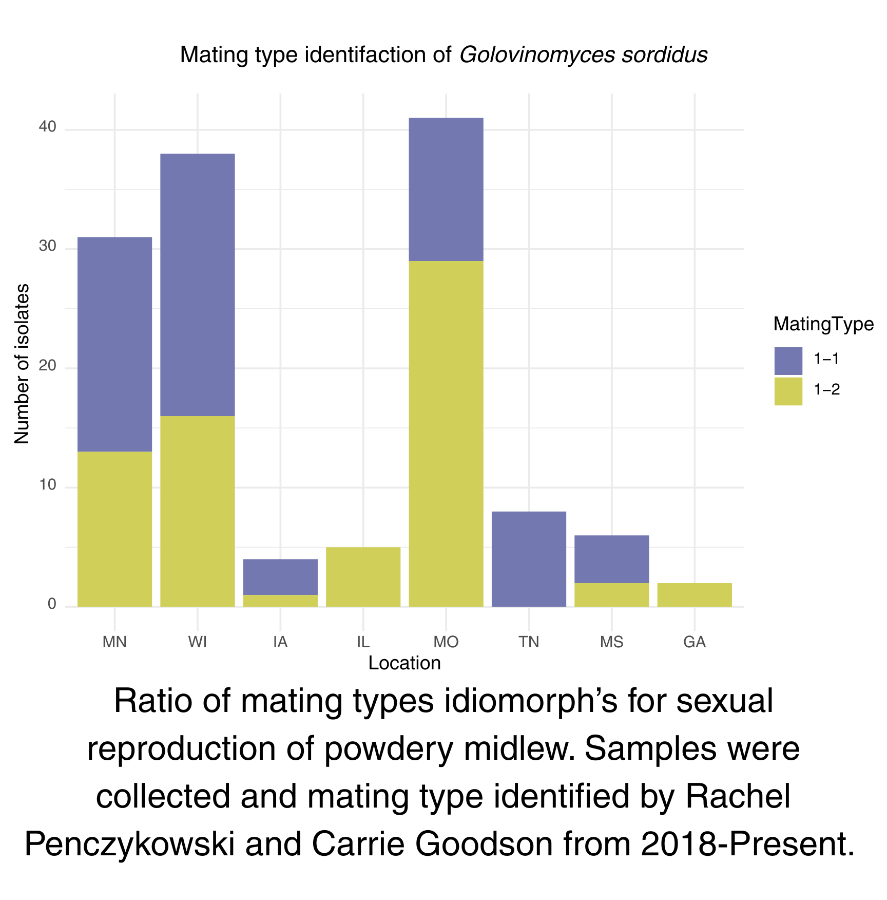
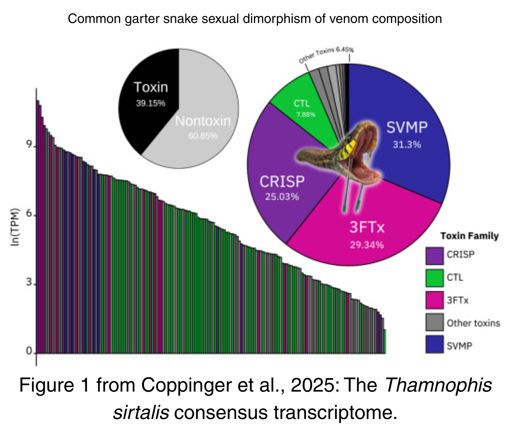
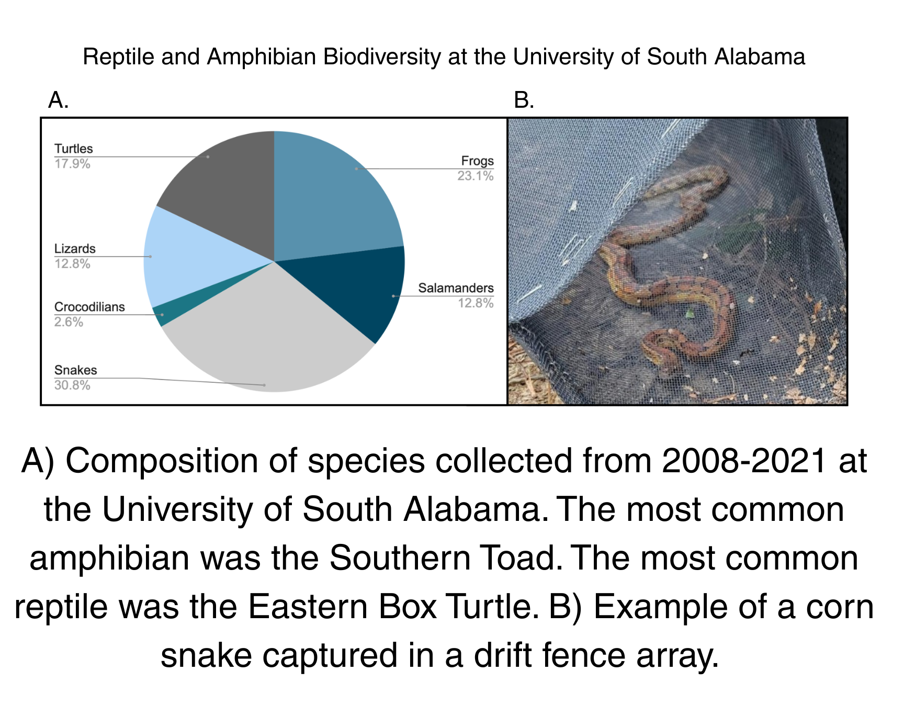

I investigate the impact of environmental change on hosts and their pathogens across spatial and temporal scales.
I am a PhD student in Ecology & Evolutionary Biology at Washington University in St. Louis. My research focuses on how climate change and urbanization impact host and pathogen relationships, distribution, and evolution. I utilize a combination of mathematical and molecular approaches to answer these questions in a common weedy plant (Plantago rugelii) and its fungal pathogen (Golovinomyces sordidus).
I grew up in rural Missouri, where my love for nature began. In 2020, I moved to Mobile, Alabama, to pursue my bachelor's degree at the University of South Alabama (USA). During my time at USA, I conducted reptile and amphibian biodiversity surveys and investigated venom transcriptomics in the Common Garter Snake. Through these experiences, I developed a passion for research and became particularly interested in disease ecology. This passion led me to pursue graduate school, and in 2024, I began my Ph.D. journey in the Penczykowski Lab at Washington University in St. Louis. I am excited to continue investigating the fascinating world of host–parasite dynamics.
I am broadly interested in disease ecology, evolutionary ecology, species distribution modeling, population genetics, and conservation.
Download my CVInvestigating how changing temperature regimes influence plant pathogens and disease dynamics.

Exploring how urbanization alters plant distribution, habitat availability, disease prevalence, and ecological interactions.

Using genomic approaches to understand population structure and evolutionary change in plant pathogens.

Investigated the venom composition of the rear-fanged snakes, Thamnophis sirtalis .

Conducted and anlyzed longitudunal biodiversity surveys to explore the stability of populations in a small habitat

Instructor: Rachel Penczykowski · BIOL.4195.01 · Washington University in St. Louis · Spring 2026
Instructor: Ken Olsen · BIOL.3501.01 · Washington University in St. Louis · Fall 2025
Instructor: Jason Strickland · BLY 490 · University of South Alabama · Spring 2024
Coppinger, Grace E., Aaron J. Stewart, Joel A. Borden, and Jason L. Strickland. "Thamnophis sirtalis and their toxic relationship: Testing for intraspecific venom variation in Common Garter Snakes." Toxicon 253 (2025): 108185.
Canterbury, D.N., Grace E. Coppinger, Sammie Morris, and Jason L. Strickland. "Hyla gratiosa (Barking Treefrog) axanthism." Herpetological Review 54(2), 266–267 (2023).
Grace Sinclair
PhD Student
Ecology & Evolutionary Biology
Washington University in St. Louis